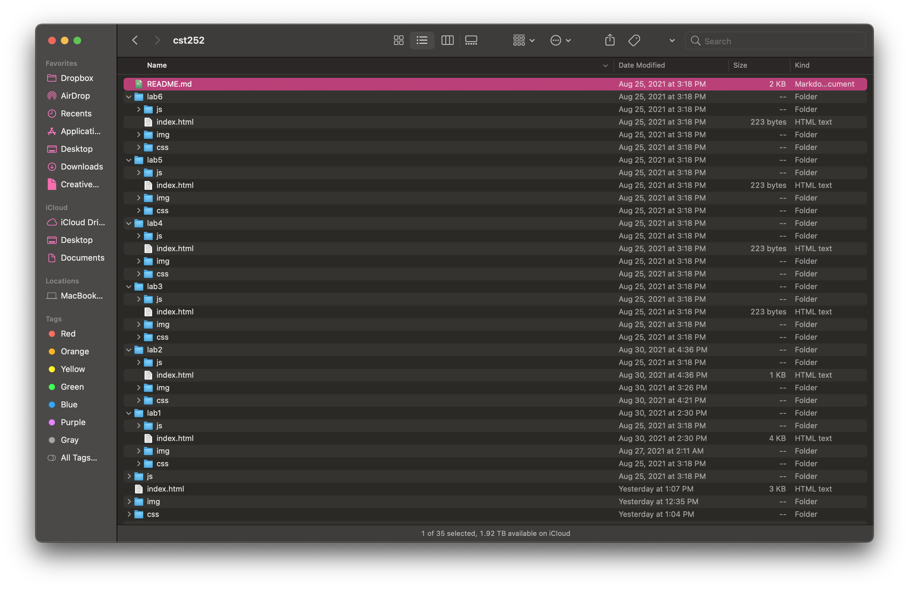
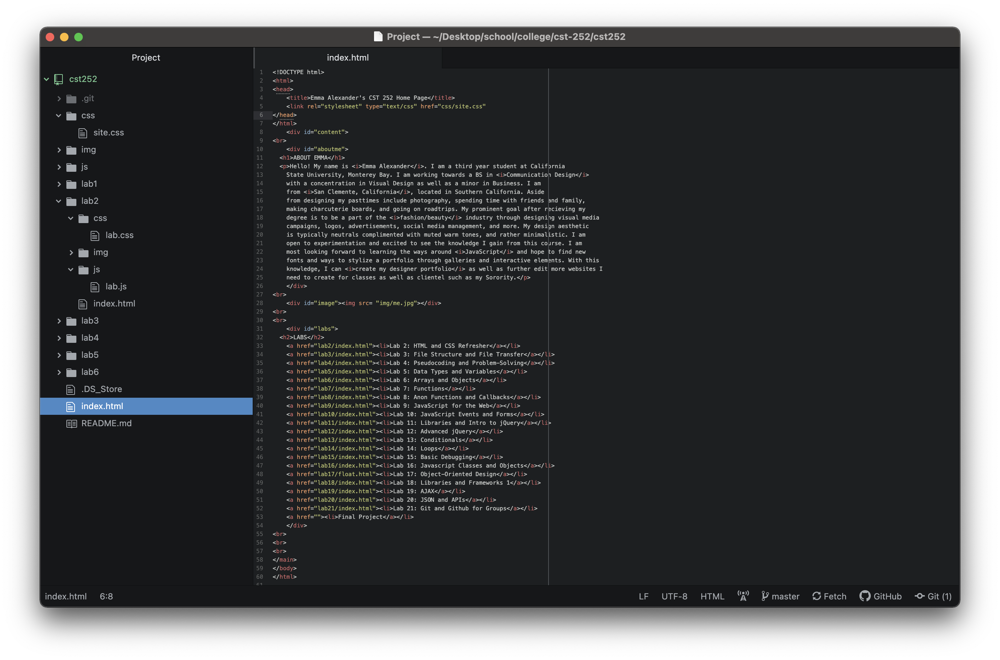
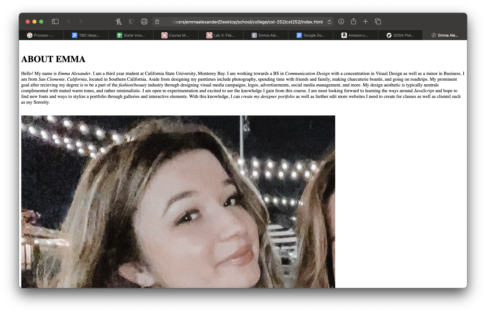
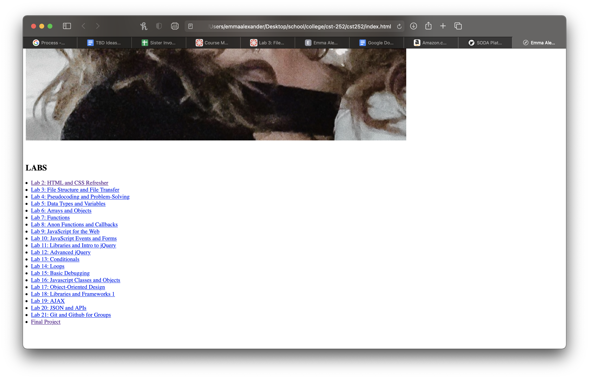
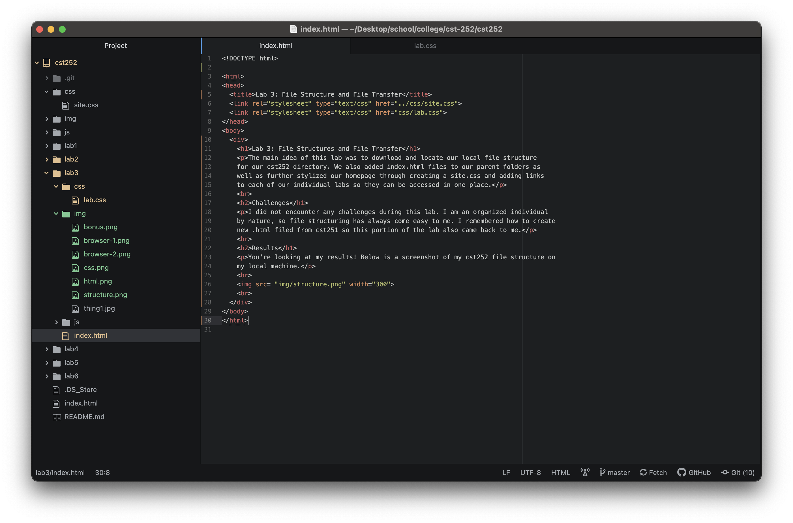
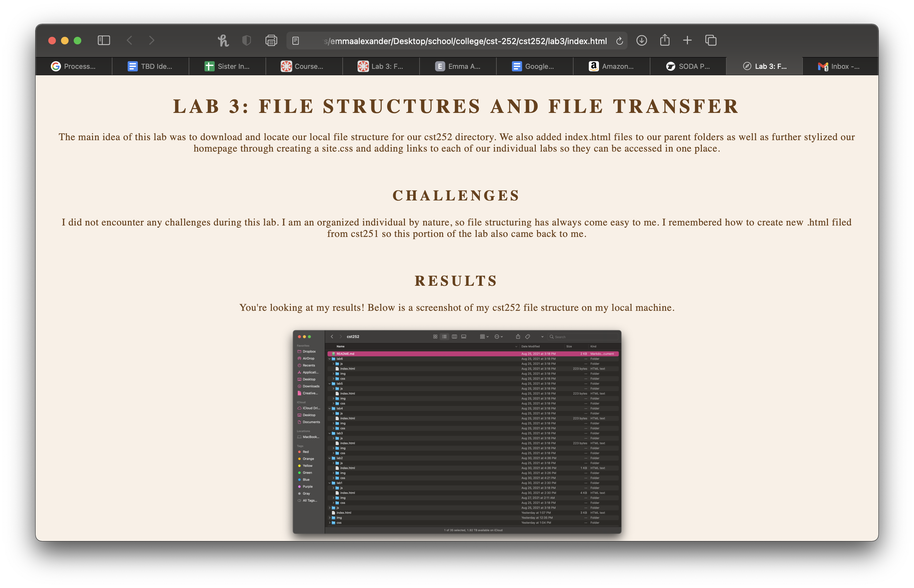
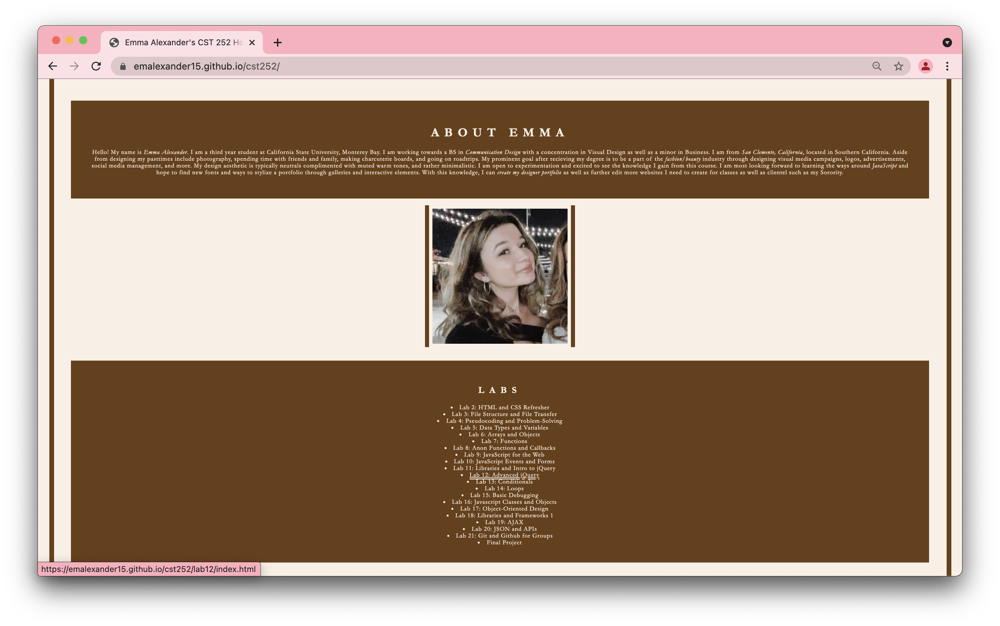
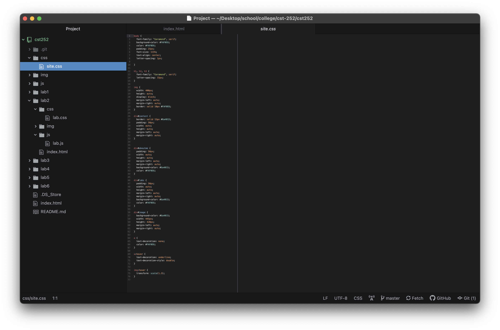

Lab 3: File Structures and File Transfer
The main idea of this lab was to download and locate our local file structure for our cst252 directory. We also added index.html files to our parent folders as well as further stylized our homepage through creating a site.css and adding links to each of our individual labs so they can be accessed in one place.
Problems
I did not encounter any challenges during this lab. I am an organized individual by nature, so file structuring has always come easy to me. I remembered how to create new .html filed from cst251 so this portion of the lab also came back to me.
Results
You're looking at my results! Below is a screenshot of my cst252 file structure on my local machine.

Screenshots

1. Homepage Html in Atom
2. Homepage in Browser
3. Homepage in Browser
4. Lab 3 Html in Atom
5. Lab 3 in Browser
6. Bonus in Browser
7. Bonus Css in Atom